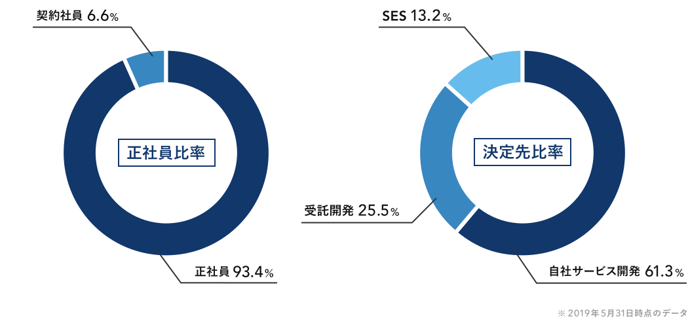
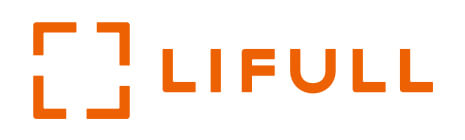
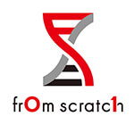

最短10週間でプロのエンジニアへ
テックキャンプは、未経験からプロのエンジニアスキルを身につけ、エンジニアとして転職ができるプログラムです。20代前半から30代まで過去1,000名※を超える方がプログラミング未経験からエンジニアへと転職が決定しています。
※1 全額返金となるためには所定の条件を満たす必要があります。詳細は利用規約を参照下さい
※2 2019年8月末時点(学習完了後、当社転職支援を利用した方の転職成功率)
テックキャンプは、未経験からプロのエンジニアスキルを身につけ、エンジニアとして転職ができるプログラムです。20代前半から30代まで過去1,000名※を超える方がプログラミング未経験からエンジニアへと転職が決定しています。
大企業に勤める従業員の平均年収UP額は約9万円(※1)の中、テックキャンプ卒業生はスキルが評価され、年収が大幅UPする事例が続々と出ています。
28歳 男性
上場IT企業のサーバーサイドエンジニアに転職
24歳
男性30名規模ITベンチャー企業に転職

未経験からエンジニアとして仕事ができるようになるまでは、通常1000時間の学習が必要です。しかし、テックキャンプは学習効率を極めることで必要な時間を600時間まで短縮しました。
テックキャンプなら、専属のライフコーチが目標設定から日々の学習進捗までをトータルに管理するため、挫折することがありません。オンラインでも最後まで1対1でサポートするため、学習をやり切ることができます。
専属のキャリアアドバイザーがキャリア形成から企業の紹介まで転職が決定するまでサポートします。万が一、転職に成功できなかった場合、受講料を全額返金(※)いたします。
テックキャンプがご紹介する求人の多くは、一般的な求人媒体には掲載されていないテックキャンプ専用の求人枠となります。そのため、人材のミスマッチが起こりづらく、99.0%と高い転職成功率を実現することができています。
お仕事を辞めている方
平日は教室、土日はオンラインで学習し、わずか10週間でプロのスキルを身につける学習スタイル。
就業中の方
出勤日の昼間はオンライン、夜間と休日(週2日)は教室を利用して半年かけてじっくりと学んでいく学習スタイル。
テックキャンプは自宅にいながらプログラミングスキルを身に付けたい方もご利用できます。
徹底的なサポート体制によってオンラインでも最後までやり切ることができます。
オンラインスタイルについてはこちらから
サービス初期から「やり抜く」ことにコミットし続けた結果、受講された方の多くが学習を完了し、転職にも成功しています。
辞めてしまった方も、病気やご家族の都合といった事情がほとんどです。
転職成功率
99.0%
転職成功実績
1000人
※2019年8月末時点(学習完了後、当社転職支援を利用した方の転職成功率)
転職成功率は99%以上。 プログラミング全くの未経験から上場企業や急成長ベンチャーへの転職が決定しています。
 |
 |
 |
||
 |
 |  |
 | |
 |
 |
 |
 |
「自分でもスキルを身につけられるか不安...」「具体的なサポート内容を知りたい」
そんな方のために何でも相談できる無料カウンセリングを実施しています。
大木 彩さん（25歳）
JapanTaxi株式会社に転職
長野 拓義さん（27歳）
株式会社NewsPicksに転職
竹谷 修平さん（31歳）
株式会社favyに転職
※学習進捗次第では全額返金保証がつかない場合があります。
※返金の条件については利用規約を参照下さい
※受講申し込みの空席状況については、こちらからご確認ください。
※63期以降の短期集中スタイルは、上記日程の2日後が受講開始日となります。

まずはテックキャンプとあなたのキャリアについて深く知りましょう。オンラインでも受けることができます。
カウンセリング後、受講する場合は本申込を行います。本申し込み後、入金のご案内をいたします。
学習開始日にキックオフに参加し、本格的に学習が開始になります。
自宅からオンラインでキャリア相談可能！
「興味はあるけど、自分でもできるか不安...」「どんなキャリアを描けばいいのか分からない...」
そんな方のために何でも相談できる無料カウンセリングを実施しています。
※無理な勧誘は一切行いませんので、お気軽にお越しください。
Q . オンラインのみの受講は可能ですか？
はい、可能です。オンライン完結で未経験からエンジニアになれるオンラインスタイルを受講いただけます。テックキャンプは徹底的なサポート体制により、自宅にいながらでも挫折せずにやり切れるプログラミング学習を提供します。
Q . 30代未経験でもサービスを利用することはできますか？
もちろん可能です。オンラインや自習学習だけの環境ではモチベーションが維持できません。しかし、テックキャンプは教室学習やライフコーチの存在、複数人開発のカリキュラムによってモチベーションを維持し、やり切ることができます。
Q . 仕事をしながらの学習でも、本当に実力はつきますか？
はい、可能です。確かに30歳を超えると未経験からの転職のハードルは上がるため、他のスクールでは受け入れをしていません。テックキャンプは教育力に自信があるため30歳を超えた方でも受け入れを行っています。
Q . 途中で学習スタイルの変更は可能ですか？
夜間・休日スタイルから短期集中スタイルへの切り替えは可能です。一方、短期集中スタイルから夜間・休日スタイルへの切り替えは行えませんのでご了承ください。
※スタイル変更をされる場合であっても差額の返金はありません。
Q . 学習期間内に学習が終わらなかった場合どうなるのでしょうか。
学習進捗が遅れてしまった場合、当社が定めた料金及び手続きにより学習期間の延長が可能です。ご希望の際は、受講開始後に担当ライフコーチへご相談ください。
自宅から参加できる「無料オンラインキャリア相談」実施中！あなたのキャリア、プロに一度相談してみませんか？